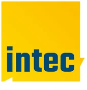

Okt12Montag
ZOLLER Automation Week
Fünf Tage Automation live bei ZOLLER Inc. Pacific: »coraLogistic«, »coraVarion« und »loadBox« in Live-Demos, Vorträgen und 1:1-Expertengesprächen.


Treffpunkte der Branche
Besuchen Sie unsere Events vor Ort oder im Live-Stream. Hier finden Sie alle Themen und Termine.
Derzeit sind in diesem Land keine Events geplant.
Fünf Tage Automation live bei ZOLLER Inc. Pacific: »coraLogistic«, »coraVarion« und »loadBox« in Live-Demos, Vorträgen und 1:1-Expertengesprächen.
Besuchen Sie ZOLLER auf der SIANE Industries und erleben Sie die Solutions vor Ort in Toulouse.
Die ZOLLER-Lösungen auf der internationalen Messe für die Fertigungsindustrie von Werkzeugmaschinen in Mailand – besuchen Sie uns.
Oktoberfest mit den neuesten Produkten der Fertigungstechnik – im traditionellen Biergartenzelt mit Brezeln, Bratwurst und deutscher Küche.

Ihr persönliches 1:1-Technologieerlebnis im nordamerikanischen Hauptsitz von ZOLLER: Live-Demos von »micBox«, »roboBox«, »coraMeasure LG«, »coraVarion« und weiteren vernetzten Lösungen – zugeschnitten auf Ihre Anwendungen und Produktionsziele.
Erleben Sie die ZOLLER Solutions auf der Hausausstellung von BIMATEC SORALUCE in Limburg.

Ready for 4.0: Workshop Tool Management für eine intelligente Fertigung. Erleben Sie praxisnah und live Lösungen für eine effiziente Werkzeugorganisation in einer vernetzten Fertigung von heute.

Ready for 4.0: Workshop Tool Management für eine intelligente Fertigung. Erleben Sie praxisnah und live Lösungen für eine effiziente Werkzeugorganisation in einer vernetzten Fertigung von heute.
Erleben Sie die Solutions von ZOLLER auf der METALEX in Bangkok: Nr. 1 Ausstellung für Werkzeugmaschinen und Metallbearbeitung im gesamten ASEAN-Raum.

Ready for 4.0: Workshop Tool Management für eine intelligente Fertigung. Erleben Sie praxisnah und live Lösungen für eine effiziente Werkzeugorganisation in einer vernetzten Fertigung von heute.
Seien Sie als Lehrkraft dabei, wenn es um die Fortbildung zum Thema digitale Werkzeugmanagementsysteme geht.

Besuchen Sie ZOLLER auf der IMTEX 2027 in Bengaluru und erleben Sie unsere Solutions live vor Ort.

Besuchen Sie ZOLLER auf der Intec in Leipzig und überzeugen Sie sich von unseren Effizienzlösungen.

Besuchen Sie ZOLLER auf der Global Industrie in Lyon und erleben Sie unsere Solutions live vor Ort.
Besuchen Sie ZOLLER auf den DST Dreh- und Spantage Südwest in Villingen-Schwenningen und erleben Sie unsere Effizienzlösungen vor Ort.

Die GrindingHub Americas bringt die Zukunft der Schleif- und Finishtechnik nach Cincinnati – mit Live-Vorführungen vom Präzisionsschleifen über die Messtechnik bis zur Automation.

Besuchen Sie uns auf der GIFA in Düsseldorf und erleben Sie unsere Solutions live vor Ort.

Die Messe ganz für Steinbearbeiter – mit den Werkzeugen, Technologien und Partnern, auf die sie sich jeden Tag verlassen.